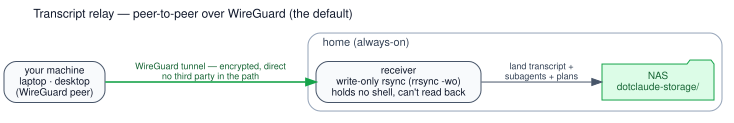
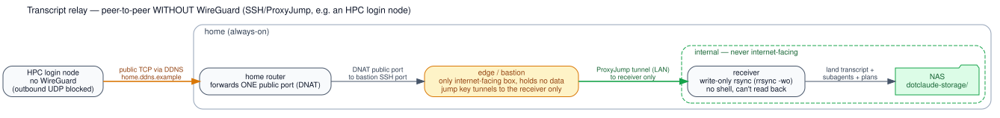

Transcripts: relay + NAS¶
SessionEnd ships a session's artifacts off the machine via a pluggable backend
(ship-transcript.sh → hooks/transports/<backend>.sh, chosen by
SCRUBJAY_TRANSCRIPT_BACKEND).
There are two parallel places those artifacts can land, chosen once at onboard time:
- Your own NAS (
rsync-wg/localbackends) — peer-to-peer over WireGuard/SSH; nothing ever touches a third party. Needs a NAS + WireGuard, and is what most of this page describes. - GitHub (
gitbackend) — each session is pushed to a privatescrubjay-chatsrepo. Zero infrastructure to run; the tradeoff is that transcripts live in a (private) third-party repo. See Backends below.
The layout and artifacts are identical either way — with the git backend they just land
in the scrubjay-chats repo instead of on the NAS. The rest of this page walks the NAS
design in full.
On the NAS path, what rides which route is split by privacy:
Sensitive → peer-to-peer, never a third party. Full conversation content stays off GitHub and goes straight to your NAS over your own WireGuard link:
| Artifact | Lands at |
|---|---|
| full transcript (machine-readable) | <host>/<slug>/<session>.jsonl |
| subagent transcripts + tool-results | <host>/<slug>/<session>/ |
| this session's task list (TaskCreate) | <host>/<slug>/<session>/tasks/ |
| plans | <host>/plans/<date>_<topic>.md |
| clean Markdown render (human-readable) | <host>/readable/<project>/<date>_<topic>__<sid8>.md |
| prompt history (all projects, this host) | <host>/history.jsonl |
| auto-memory (cross-machine) | its own git repo on the NAS, not this tree — see below |
The NAS holds two parallel trees per host. The .jsonl tree above is canonical — exact,
machine-readable, the thing you'd resume or feed to a tool. Alongside it, a readable/ tree
holds the same sessions rendered as Markdown session logs (user + assistant text plus the full
tool stream — each call shows its input, Bash commands verbatim, and the tool's output inline;
only thinking and system/meta lines dropped) — for browsing and manually repeating tasks. It's organised for humans: foldered by project (the session's working dir),
each file named <date>_<topic>__<sid8>.md where topic is the first real prompt slugified.
Rendering happens automatically on every ship (bin/render-transcript.sh, additive — it never
touches the .jsonl); bin/backfill-readable.sh re-renders transcripts already on the NAS.
Plans get the same human-friendly treatment: Claude Code saves each plan under three random words
(rippling-sprouting-whisper.md), so on every ship sj_normalize_plans (in bin/lib.sh) renames
them in place to <date>_<topic>.md — date from the file's mtime, topic from the plan's first
heading (a leading Plan: stripped) — before the plans/ dir is mirrored. It's idempotent
(already-dated names are left alone), so each machine self-normalizes its own plans going forward.
Unlike the always-additive transcript/readable/ trees, the plans/ mirror is authoritative
(transport_ship … mirror): the relay copy is made an exact copy of the local plans/, so a plan
that was already shipped under its old random-word name doesn't linger as a stale duplicate after
the rename.
Memory → its own git repo. Auto-memory needs git's bidirectional merge + history (so the same
project recalls memory written on any machine), so it rides a dedicated repo separate from everything
else. Because it holds sensitive paths, where that repo lives is a custody choice that follows
your backend: a bare git repo on the NAS, reached over WireGuard (local/rsync-wg — sensitive
paths never leave your hardware; the default), or a separate private GitHub repo (git backend —
simpler wiring, but stores those paths in a third party's private repo). SCRUBJAY_MEMORY_REMOTE
holds whichever — a local path on the NAS box, ssh://… over WG on clients, or a git@github.com:…
repo. See memory for the trade-off in full. claude-sync.sh symlinks each project's native
~/.claude/projects/<project>/memory/ into a local clone (SCRUBJAY_MEMORY, shared across machines —
not per-host), sync-session.sh pulls it on session start, and log-session.sh (memory-sync.sh push)
publishes it on session end. No third party ever sees it. The pull and the publish also run on
demand mid-session via the /sjsync and /sjlog slash commands (shipped with the app, wrapping
sync-session.sh and hooks/publish-now.sh). (Older versions kept memory per-host in
scrubjay-data on GitHub; claude-sync.sh migrates that content into the clone on first run.)
See memory-sync.md for the bare-repo setup and per-client WG onboarding.
Not sensitive → git (scrubjay-data, GitHub). Your rules, settings, personal commands,
agents, the plugins/ marketplace list, host config and logs/ are low-sensitivity, need
merge/history across machines, and must be reachable to bootstrap a new box — so they ride normal
git. (The generic /dc* slash commands instead ship with the app in scrubjay/commands/, so a
fresh install has them immediately; claude-sync.sh merges both sources into ~/.claude/commands/.
Memory used to live here too; it now rides its own NAS repo above. Transcripts are not part of git.)
The two peer-to-peer paths to your NAS¶
However a machine reaches home, the sensitive content goes straight to your NAS and never touches a third party. There are two paths; which one a machine uses depends only on whether it can run WireGuard.
1. Over WireGuard — the default. Most machines (laptops, desktops) join your WireGuard network and rsync the session straight to the receiver:

2. Without WireGuard — over SSH (e.g. an HPC login node). Some machines can't use WireGuard: an HPC cluster typically blocks the outbound UDP it needs. They reach the NAS over plain SSH instead, hopping through a small internet-facing edge/bastion that holds no data and can only forward to the receiver:

The bastion is the only box exposed to the internet; the receiver and NAS stay on the home network, reachable solely through that one jump. A leaked key still can't get a shell, read the archive back, or reach anything but the receiver.
What the no-WireGuard path needs (the diagram shows placeholders — substitute your own):
- a DDNS name (e.g.
home.ddns.example) so the sender always finds your home even when the ISP rotates your public IP; - one public TCP port forwarded on your router to the bastion — the single inbound hole;
- an edge/bastion machine (always-on, internet-facing, holds no NAS) whose jump key is restricted to port-forwarding to the receiver only, no shell;
- the receiver (the NAS box) authorizes that same key as a write-only
command="<APP>/bin/sj-receive.sh …",restrictline (wrapsrrsync -wo+ group-normalizes perms); rsync ≥ 3.2.3on both ends.
bin/onboard-hpc-client.sh (on the sender) and bin/onboard-edge-node.sh (on the bastion)
configure both ends; the private runbooks/wireguard-transcripts.md is the full walk-through.
Backends¶
One file each, defining a write side — transport_ship <src> <relpath> (src may be a file or
a directory) — and a read side used only by session hand-off:
transport_resolve <sid> # -> TSV: <relpath> <lines> <mtime>, one row per archived copy
transport_fetch <relpath> <dst> # file or directory
local and git read straight off the filesystem (the NAS mount, or the clone). rsync-wg cannot
— its relay key is write-only by design (below) — so it reads over the separate, read-only
sjmcp SSH channel instead. The write-only property of the relay key is preserved.
The backends themselves:
local— the box that has the NAS mounted copies straight in, no network hop. SetSCRUBJAY_LOCAL_CHATSto the NAS chats root.rsync-wg— every other machine rsyncs over WireGuard to the receiver. SetSCRUBJAY_WG_TARGET+SCRUBJAY_WG_SSHKEY.git— the zero-infrastructure option: push each session to the privatescrubjay-chatsrepo on GitHub. No NAS or WireGuard to stand up; the tradeoff is that transcripts live in a (private) third-party repo rather than only on your own hardware. Optionally, a mirror host can also pull them down to a NAS (mirror-host.md) — but the GitHub repo is a perfectly good permanent home on its own.
P2P requirements (the rsync-wg path):
- the sender can reach the receiver (the NAS box) over WireGuard;
- a per-machine SSH key (
SCRUBJAY_WG_SSHKEY), authorized on the receiver as a write-onlycommand="<APP>/bin/sj-receive.sh …",restrictline (wrapsrrsync -woand chmods each push group-readable) — a leaked key can't read the archive back, get a shell, or forward; rsync ≥ 3.2.3on both ends (for--mkpath).
Full design + the WireGuard activation runbook: transcript-transport.md
and (private) scrubjay-data/runbooks/wireguard-transcripts.md.